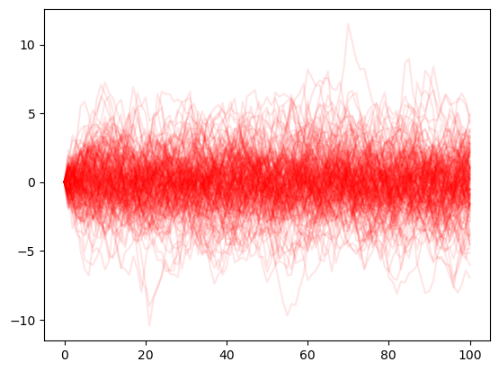
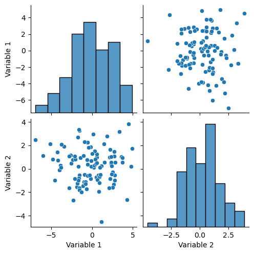

import numpy as npNumeric
Using Numpy
Selection from w3resources and rougier/numpy100
Exercise 1
- Write a NumPy program to generate five random numbers from the normal distribution.
np.random.rand(5)array([0.21510737, 0.21120555, 0.34300793, 0.90026871, 0.71797054])Exercise 2 Write a NumPy program to generate six random integers between 10 and 30.
np.random.randint(10, 31, size=6)array([16, 20, 20, 14, 20, 19])Exercise 3 Create a 3x3 matrix with values ranging from 0 to 8
np.random.randint(0, 9, size=(3,3))array([[7, 0, 8],
[1, 7, 0],
[5, 4, 6]])Exercise 4 Create 2d array \(M\) such of size 3*3 such that \(M_{ij} = i\times j\)
u = np.arange(3)+1 # creates vector with 1,2,3
u[:,None]*u[None,:]array([[1, 2, 3],
[2, 4, 6],
[3, 6, 9]])Exercise 5 Create 3 vectors of length 5 and create a matrix where each column is one of the vector.
a = np.arange(0,5)
b = np.arange(5,10)
c = np.arange(10,15)
np.column_stack([a,b,c])array([[ 0, 5, 10],
[ 1, 6, 11],
[ 2, 7, 12],
[ 3, 8, 13],
[ 4, 9, 14]])Exercise 6 Create 3 vectors of length 5 and create a matrix where each row is one of the vector.
a = np.arange(0,5)
b = np.arange(5,10)
c = np.arange(10,15)
np.row_stack([a,b,c])array([[ 0, 1, 2, 3, 4],
[ 5, 6, 7, 8, 9],
[10, 11, 12, 13, 14]])Exercise 7 Find indices of non-zero elements from np.array([1,2,0,0,4,0]). Replace them with -1.0
v = np.array([1,2,0,0,4,0])
indices = ~np.isclose(v, 0.0)
#better than `v !=0.0` in case values are close but not equal to 0
v[indices]=-1.0
varray([-1, -1, 0, 0, -1, 0])Exercise 8 Write a NumPy program to normalize a 3x3 random matrix. (Define norm \(|x|=\sqrt{\sum x_i^2}\) and compute \(M/|M|\))
m = np.random.rand(3,3)
norm = lambda u: np.sqrt(np.sum(m**2))
def normalize(M):
return M/norm(M)
normalize(m)array([[0.25083547, 0.24018983, 0.53775716],
[0.60598535, 0.0048301 , 0.08123388],
[0.37595728, 0.26999702, 0.04609624]])Exercise 9 Create 2d array \(M\) such of size 3*3 such that \(M_{ij} = i\times j\)
u = np.arange(3)+1 # creates vector with 1,2,3
u[:,None]*u[None,:]array([[1, 2, 3],
[2, 4, 6],
[3, 6, 9]])Exercise 10 Take a random matrix \(A\) of size \(N\times 2\) (N=10) where each line represents a different 2d point. Compute the euclidean distance matrix such that \(E_{ij}\) is the distance between point \(i\) and point \(j\).
N = 10
A = np.random.rand( N,2)
B = A[:,None,:] # B_ijk = A_ik
C = A[None,:,:] # C_jk = A_jk
np.sqrt(
np.sum(
(( B - C)**2),
axis=2)
)array([[0. , 0.16725802, 0.2789606 , 0.40612636, 0.47504742,
0.10726855, 0.58071971, 0.17470673, 0.50381449, 0.32924439],
[0.16725802, 0. , 0.43701528, 0.24132115, 0.6340258 ,
0.27065717, 0.68681185, 0.3419181 , 0.41446088, 0.1975022 ],
[0.2789606 , 0.43701528, 0. , 0.66004565, 0.19706009,
0.2148399 , 0.37721702, 0.13451282, 0.64207054, 0.54720166],
[0.40612636, 0.24132115, 0.66004565, 0. , 0.85411087,
0.5114768 , 0.8406523 , 0.57917532, 0.33644344, 0.15013449],
[0.47504742, 0.6340258 , 0.19706009, 0.85411087, 0. ,
0.39997148, 0.33923342, 0.31521581, 0.80074929, 0.73471866],
[0.10726855, 0.27065717, 0.2148399 , 0.5114768 , 0.39997148,
0. , 0.56537958, 0.08478762, 0.59950819, 0.43570146],
[0.58071971, 0.68681185, 0.37721702, 0.8406523 , 0.33923342,
0.56537958, 0. , 0.50096862, 0.65558965, 0.69391475],
[0.17470673, 0.3419181 , 0.13451282, 0.57917532, 0.31521581,
0.08478762, 0.50096862, 0. , 0.62833896, 0.48867058],
[0.50381449, 0.41446088, 0.64207054, 0.33644344, 0.80074929,
0.59950819, 0.65558965, 0.62833896, 0. , 0.23088681],
[0.32924439, 0.1975022 , 0.54720166, 0.15013449, 0.73471866,
0.43570146, 0.69391475, 0.48867058, 0.23088681, 0. ]])Exercise 11 Create A of size \(10\times 3\). Create matrix \(B\) with the same column as \(A\) reordered by sum of absolute values.
A = np.random.rand(10,3)
v = np.sum(np.abs(A), axis=1) # values for each row
new_order = np.argsort(v)
A[new_order,:]array([[0.37043156, 0.18647922, 0.28380079],
[0.38707922, 0.38995773, 0.26295399],
[0.65377111, 0.07227131, 0.38283178],
[0.22454386, 0.82039156, 0.16386348],
[0.92318985, 0.07880316, 0.24136368],
[0.68624188, 0.11444125, 0.49974818],
[0.49323743, 0.62723799, 0.43132796],
[0.2432563 , 0.77297125, 0.68497518],
[0.61888255, 0.57791432, 0.6178024 ],
[0.4792605 , 0.76334795, 0.77361025]])Simulating an AR1
Take an AR1 process \(x_t = A x_{t-1} + \epsilon_t\) with \(\epsilon_t \sim \Sigma\) where \(\Sigma\) is a positive definite matrix.
Exercise 12 Define 2x2 matrices \(A\) and \(\Sigma\), the latter being symmetric positive definite
A = np.array([
[0.9, 0.4],
[-0.1, 0.8]
])
Σ = np.array([
[0.8, 0.1],
[0.1, 0.6]
])Exercise 13 Compute asymptotic variance using matrix algebra (there is a recursive formula)
Define \(S_0 = I\) and define \(S_{n+1} = A S_n A' + \Sigma\)
def asymptotic_variance(A,Σ, K=1000):
n = Σ.shape[0]
S = np.eye(n)
for k in range(K):
S = A@S@A.T + Σ
return Sasymptotic_variance(A,Σ)array([[6.53179191, 0.22398844],
[0.22398844, 1.74855491]])Exercise 14 Simulate \(N\) draws for \(T\) periods and store the result in sim.
N = 50 # let's simulate N draws at the same time
def simulate( A, Σ, T, N):
x0= np.array([0,0]) # initial point
x = x0[None,:].repeat(N, axis=0)
mu = Σ[0,:]*0
sim = [x]
for t in range(T):
x = sim[-1]
epsilon = np.random.multivariate_normal(mu, Σ, size=N)
x = x@A.T + epsilon
sim.append(x)
# return sim
# print(sim[0])
return np.concatenate(
[u[:,None,:] for u in sim],
axis=1
)sims = simulate(A, Σ, 100, 10)
sims.shape
# first dimension: draw
# second dimension: time
# third dimension: variable(10, 101, 2)Exercise 15 Compute ergodic variance (bonus compute std of the variance estimate)
sims = simulate(A, Σ, 100, 1000)np.cov(
sims[:, -1, :].T # keep only last period
)
#orders of magnitude are similar to theoretical variance computed abovearray([[7.20014718, 0.30583115],
[0.30583115, 1.83896185]])Exercise 16 Plot a few simulations on the same graph
sims = simulate(A, Σ, 100, 100)from matplotlib import pyplot as plt
for i in range(100):
plt.plot(sims[i,:,:], color='red' ,alpha=0.1)
Exercise 17 Plot asymptotic distribution (seaborn)
import seaborn as sns
sims = simulate(A, Σ, 100, 1000)import pandas as pd# seaborn operates naturally on pandas dataframes
df = pd.DataFrame(sims[:,-1,:], columns=["Variable 1", "Variable 2"])sns.pairplot(df)